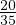
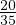

Näiteks  = , sest 20 ja 35 jaguvad viiega ning
 = , sest 6 ja 12 jaguvad
kuuega.
= , sest 6 ja 12 jaguvad
kuuega.
Mõningaid harilikke murde saab lihtsustada taandamise teel. Selleks tuleb nii
lugejat kui nimetajat sobiva arvuga läbi jagada. Seda saab teha, kui nii lugeja
kui nimetaja jaguvad antud arvuga. Taandada ei saa, kui niisugust arvu ei
leidu.
Näiteks  = , sest 20 ja 35 jaguvad viiega ning = , sest 6 ja 12 jaguvad
kuuega.